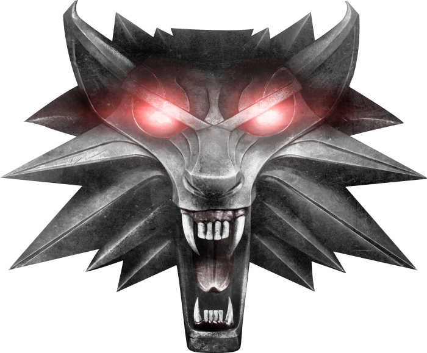

The Witcher, del polaco Wiedźmin (El brujo), es un videojuego de rol para PC desarrollado por CD Projekt RED STUDIO y distribuido por CD Projekt en Polonia y Atari en el resto del mundo. El videojuego está basado en la saga de libros del mismo nombre escritos por el autor polaco Andrzej Sapkowski. Este videojuego utiliza el motor aurora de la compañía BioWare. Fue lanzado en Europa y Norteamérica en octubre de 2007. Una versión para consola que utilizaría un motor de juego y sistema de combate totalmente nuevo, titulada The Witcher: Rise of the White Wolf iba a ser lanzada durante el otoño del 2009, pero fue suspendida por problemas de pago con los desarrolladores de la compañía francesa Widescreen Games.
The Witcher tiene lugar en un mundo fantástico medieval y relata la historia de Geralt de Rivia, uno de los pocos brujos restantes (cazadores de monstruos a sueldo, quienes cuentan con poderes sobrenaturales).
Recientemente, la productora polaca Platige Image ha anunciado que The Witcher tendrá su propia serie en la plataforma de contenidos audiovisuales Netflix.12 No todos los personajes de los videojuegos aparecerán en la serie.
Comenzando por el primer título de la saga, en The Witcher el gameplay empieza con un amnésico Geralt que no recuerda nada de lo sucedido en los años anteriores. Geralt es llevado a Kaer Morhen para recuperarse, ya que se trata de uno de los pocos lugares seguros de los brujos del Continente, pero tras una corta estancia en el lugar, Kaer Morhen es atacado por Salamandra, un grupo de bandidos cuyos líderes son Azar Javed y El Profesor.
Durante el ataque consiguen robar las pociones de los brujos con el fin de suministrárselas a los humanos y convertirlos en brujos también. Tras esto, Geralt y Triss Merigold emprenden la marcha a Vizima –bajo el mandado del Rey Foltest– para encontrar información sobre Salamandra, y allí se encuentran con un niño llamado Alvin que les advierte sobre una profecía según la cual el mundo será completamente destruido.
Mientras buscan información, Geralt y Triss descubren la existencia de una guerra civil entre los Scoia’tael y la Orden de la Rosa Llameante por el reino de Temeria. En medio del caos generado por la guerra, el Rey Foltest pide ayuda a Geralt para liberar a su hija Ada de una maldición, aunque no es la primera vez que Geralt ve a la princesa, ya que tiempo atrás deshizo una maldición que la convirtió en un monstruo.
Geralt de Rivia es un brujo, protagonista principal de la saga. Como todos los brujos, Geralt es un cazador de monstruos a sueldo. Posee habilidades sobrehumanas y es un maestro espadachín. Durante la Prueba de las Hierbas, Geralt exhibió una tolerancia inusual para los mutágenos que conceden a los brujos sus habilidades. Por lo tanto, Geralt fue expuesto a otros experimentos mas fuertes, que le concedieron el pelo blanco, dándole mayor velocidad, fuerza y resistencia que sus compañeros brujos.
Triss Merigold Es una hechicera. Es llamada Decimocuarta del monte porque se la consideró por error asesinada durante la Batalla del Monte de Sodden. Amiga de Yennefer y desafortunadamente enamorada del brujo Geralt. Se encargó de cuidar a Ciri por algún tiempo y es como una hermana mayor para ella. Es miembro de la Logia de las Hechiceras, asi como, junto a Fercart y Keira Metz, del consejo real del Rey Foltest.
Cirilla Fiona Elen Riannon (mejor conocida como Ciri o la Leoncilla de Cintra) nació el 1 de mayo de 1251, durante la Belleteyn. Es la princesa de Cintra, hija de Pavetta de Cintra y de Duny, nieta de la Reina Calanthe. Luego de que Geralt de Rivia levantó la maldición de Duny, Geralt le pidió como recompensa el hijo que Pavetta estaba esperando de él, pero que el mismo no sabía, aplicando la Ley de la Sorpresa. 6 años después del nacimiento, Geralt volvió a Cintra a por ella, pero no se la llevó a Kaer Morhen, de hecho ni siquiera la miró. La reina no le entregó ninguna información, ni el género del niño, ni su nombre. Esta niña era Ciri.
Yennefer de Vengerberg (noche de Belleteyn de 1173 - 6 o 7 de junio de 1268, Rivia) fue una hechicera que vivió en la capital de Aedirn - Vengerberg. Ella era la miembro más joven del Concilio de los Hechiceros y después, la Logia de Hechiceras trato de reclutarla "a la fuerza", consiguiendo huir del castillo gracias a la teletransportación, usando como catalizador el agua de una ostra para transportarse al mar del que provenía (Las Islas Skellige). Ella fue el amor del brujo Geralt de Rivia y la figura materna de Ciri.
The free city of Novigrad is a beautiful, eastern European-style locale full of wonderful architecture, dangers and quite a few secret gangs. Of course, for Geralt, it’s also where most of the shops are, and that’s what’s important. Like any good city, Novigrad also has an undercurrent of intrigue, murder and roguish behaviour – you just have to know where to look.
In case you can’t tell from the thinly disguised name, Oxenfurt is a university town, and it’s where a large part of the DLC Hearts Of Stone takes place. It’s a much fancier place than Novigrad, with Tudor-style architecture and manicured gardens, but that doesn’t mean it’s not still a wretched hive of scum and villainy – there’s a reason for there being a prison, after all.

A half-collapsed castle set in the mountains, Kaer Morhen is where Witchers used to train and learn to fight. By the time The Witcher 3 occurs, the castle is in ruins – but old friend and old guy Vesemir is still living there, and it’s with his help that you train Ciri, just like the Witchers of old.